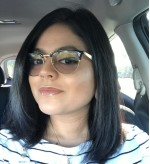

About Me
 My name is Jackie Geiger and I was born in Miami on September 9, 1993 and raised in West Palm Beach since I turned 3 years old. My ethnicity is Nicaraguan on both of my parents side. I like to learn new things about any of the latest devices and phones. I always kept up to date on my technology and my favorite device to escape my reality is my PlayStation 4 (though I haven't had time for it). I enjoy cardio in the mornings, rollerblading, and skateboarding as my outdoor activities and exercise choices. I enjoy coming home to my family which is my husband Markus, my step-daughter Arianna, my niece Kianna, and my mother Vilma who helps us with the girls and house work. Another part of my family are my dogs Joey, Lola, and Roscoe. I also have two cats named Kiki and Prince.